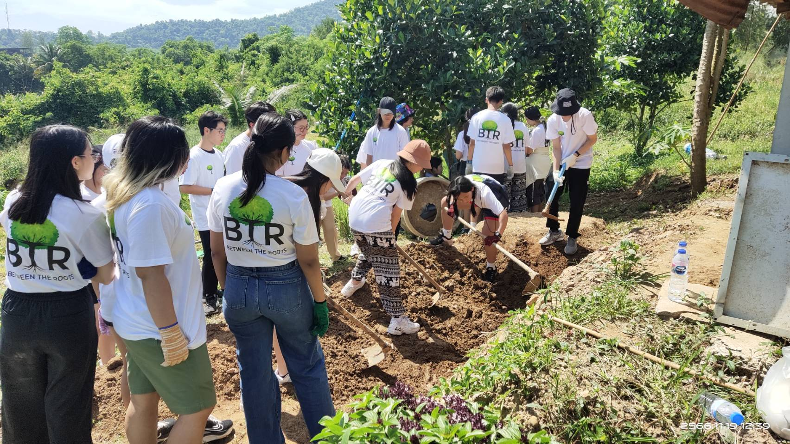
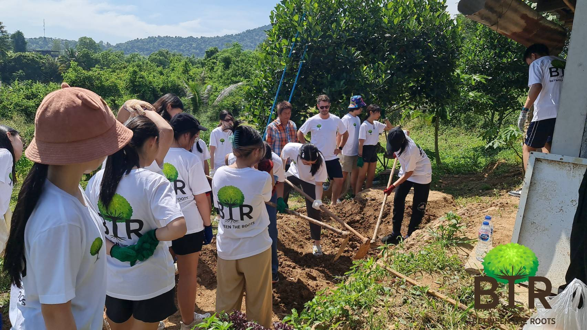
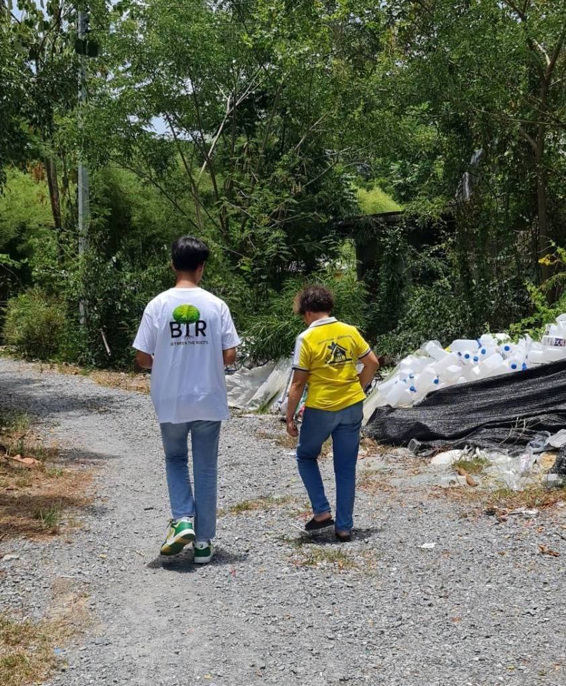
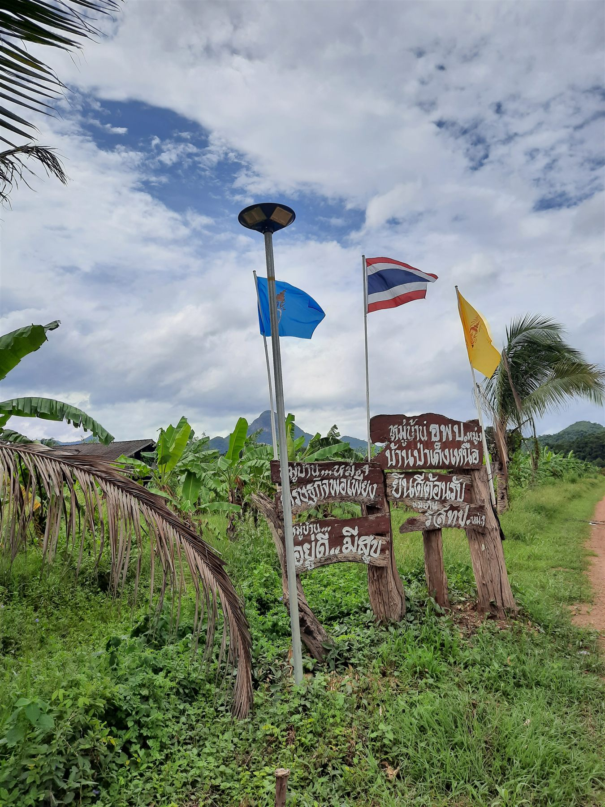

Articles

An Hour of Labor for Ten Years of Energy
A recap of BTR’s first community outreach trip at Pa Deng Village in Phetchaburi, Thailand in November 2023.
Read more
Peerada Patitus: Innovator of Plastic Waste Management
https://www.bangkokpost.com/learning/community/2668111/turning-waste-into-fuel
Read more
Koson Saengthong: Model for Improving Energy and Waste Management
An interview between Gunn and Mr Koson, where the latter discusses energy and waste management in Thailand.
Read more